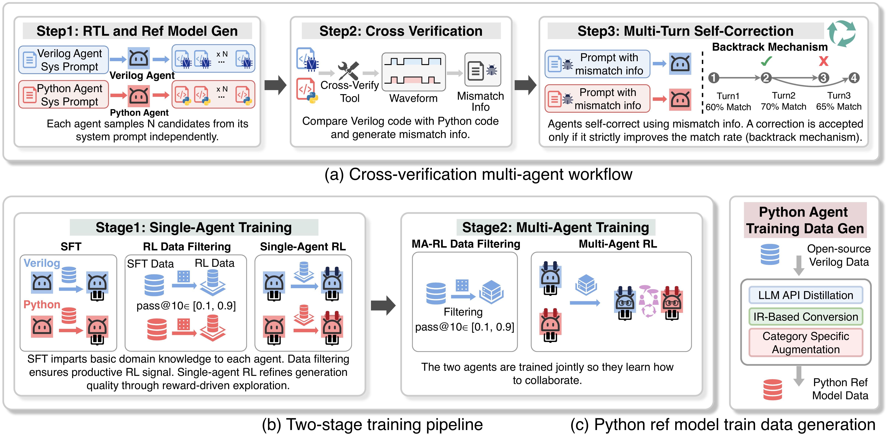
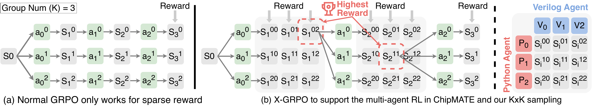
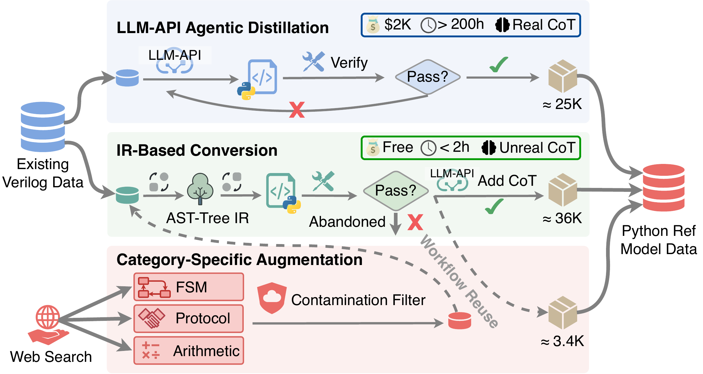
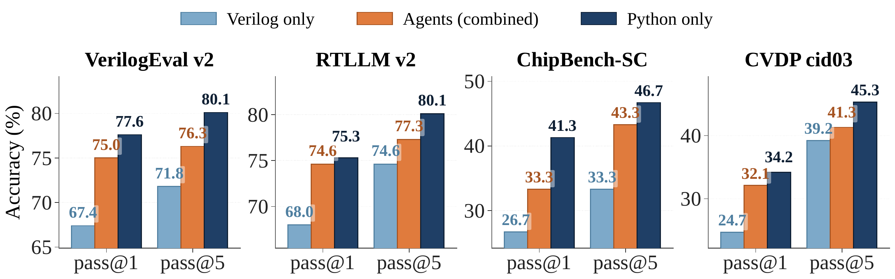
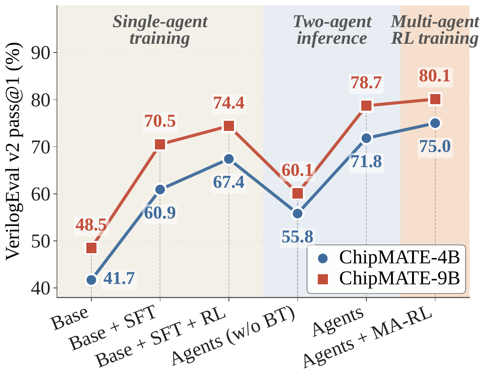
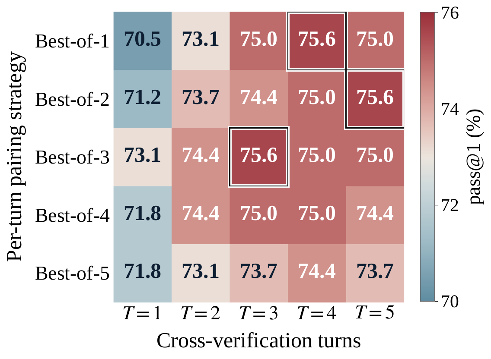

ChipMATE
Multi-Agent Training via Reinforcement Learning for Enhanced RTL Generation
Existing API-based agentic systems for RTL code generation are fundamentally misaligned with industrial practice: they assume a golden testbench at generation time, depend on closed-source APIs incompatible with chip vendors' air-gapped security requirements, and cannot be trained on vendors' proprietary RTL codebases. We present ChipMATE, the first self-trained multi-agent framework for RTL generation. Inspired by industrial practice — where correctness emerges from cross-comparison between independently written RTL modules and reference models — ChipMATE pairs a Verilog agent with a Python reference-model agent that mutually verify each other's outputs without any golden oracle. With a backtrack-based inference workflow and a two-stage training pipeline, ChipMATE achieves 75.0% and 80.1% pass@1 on VerilogEval V2 with 4B and 9B base models — outperforming all existing self-trained models and even DeepSeek V4 (1600B parameters).

Overview of ChipMATE. (a) A multi-agent cross-verification workflow with a backtrack mechanism. (b) The two-stage training pipeline, complemented by a hybrid reference-model data generation framework.
Introduction
LLMs excel at general-purpose programming but struggle with Register-Transfer Level (RTL) code generation, a cornerstone of modern chip design — largely due to the scarcity of high-quality RTL data in public corpora. Recent agentic workflows like MAGE and VerilogCoder orchestrate LLMs through task decomposition and iterative self-correction, achieving promising results on academic benchmarks.
Despite these advances, current agentic RTL pipelines are fundamentally misaligned with industrial chip-design practice in three coupled ways:
- No golden testbench in production — In real chip vendors, testbenches are written by dedicated verification engineers after the RTL, not before. Even when one exists, it is often imperfect — not a reliable oracle.
- API-LLMs conflict with security posture — RTL is treated as first-class IP; core development servers are air-gapped to prevent any data leakage to third-party endpoints.
- Internal codebases sit unused — Years of production-grade RTL — far superior to any public training data — remain entirely unused because API-based LLMs cannot be fine-tuned on proprietary code.
Recent self-trained models (QiMeng-CodeV-R1, RTLSeek) remove the API dependency, but generate code in a single turn: no mechanism to check or correct their own output. This is unsurprising — even a senior design engineer rarely writes correct RTL on the first attempt. The chip industry solves this through a cross-verification workflow: design engineers write RTL while verification engineers independently implement a reference model in a high-level language; neither side is assumed correct, and the two iteratively compare outputs until the design is verified.
This industrial workflow directly inspires ChipMATE: a multi-agent system where one agent generates Verilog in the role of a design engineer and another generates a Python reference model in the role of a verification engineer. The two agents iteratively cross-verify each other to produce high-quality RTL code.
Three Challenges
- (C1) Error propagation without a golden oracle — A mismatch between agents does not reveal which side is wrong. Naively asking one agent to "correct" the other compounds errors turn by turn, producing worse results than a single-model baseline.
- (C2) Weak individual capability — Off-the-shelf Qwen3.5-4B/9B achieve below 45% on both Verilog and reference-model generation. Each agent's individual capability must be strengthened before any meaningful collaboration can occur.
- (C3) No training data for reference-model generation — Even DeepSeek-R1 achieves below 20% pass@1 when converting Verilog into Python reference models. Direct distillation is impractical.
Three Contributions
- Cross-verification multi-agent workflow (C1) — A backtrack mechanism that automatically reverts to a previous turn whenever the current turn produces worse results — preventing error compounding.
- Two-stage training pipeline (C2) — Stage 1 trains each agent separately with SFT + RL to saturate individual capability; Stage 2 trains the team jointly with our X-GRPO algorithm to learn collaboration.
- Hybrid data-generation framework (C3) — Combines API distillation, IR-based AST conversion, and category-specific augmentation to produce 64.4K high-quality reference-model samples — at a fraction of pure-API cost.
ChipMATE: Three Components
Cross-Verification Workflow
A Verilog agent and a Python reference-model agent mutually verify each other's outputs. A backtrack mechanism reverts to the last accepted turn whenever the current turn does not strictly improve the match rate.
Two-Stage Training Pipeline
Stage 1: each agent is trained separately with SFT + RL to saturate individual capability. Stage 2: both agents are trained jointly with our X-GRPO algorithm to learn collaboration.
Hybrid Data Generation
Combines API distillation, IR-level conversion, and category-specific augmentation to produce 64.4K verified Python reference-model samples for training.
Cross-Verification Workflow
Two agents independently generate N candidate implementations from the same specification. A cross-language comparison tool simulates both on 1000 random stimuli; if outputs disagree, each agent self-corrects over multiple turns — without ever seeing the other agent's code.
(1) Backtrack Mechanism
A correction is accepted only if it strictly improves the match rate; otherwise the agent reverts to its last accepted version. This prevents the agent from drifting into worse states turn over turn — a failure mode that single-pass multi-agent setups suffer from naively.
(2) Waveform → Natural Language
Raw waveform mismatches are unparseable for LLMs. We build a converter that locates the first divergent cycle and packages the surrounding I/O context into a structured description the agent can directly act upon — bridging the low-level cycle-accurate world and the natural-language reasoning world.
Prompt Design
We mirror the combinational/sequential separation found in standard RTL textbooks — LLMs already partially internalize this from pretraining. Each prompt has four sections: code skeleton (with module name and parameterized port list), combinational-logic guidelines (latch avoidance, full-case coverage), sequential-logic guidelines (reset handling, non-blocking conventions), and a few-shot example. This structured prompt alone lifts first-attempt pass rate by 1–5% on frontier API models.
Two-Stage Training Pipeline

(a) Standard GRPO collapses to group size 1 across multi-turn rollouts when dense per-turn rewards are used. (b) X-GRPO restores meaningful group variance: both agents independently sample K candidates per turn, paired into K×K candidate pairs. The best-scoring pair becomes the shared prefix for the next turn.
After Stage 1, both agents already excel at their respective code-generation tasks. Stage 2 teaches them to collaborate. When a mismatch arises, each agent must analyze the diagnostic information, determine whether the fault lies in its own code or the other agent's, and apply self-correction only when it identifies a genuine error in its own implementation.
X-GRPO Trajectory Sampling
Standard GRPO is ill-suited to multi-turn multi-agent settings: assigning a dense reward at the end of each turn collapses the effective group size to 1 for every turn beyond the first. We propose X-GRPO, drawing from Tree-of-Thought and AT-GRPO, which restores meaningful within-group variance across turns by sampling K×K candidate pairs and selecting the best as the shared prefix.
Hierarchical Reward Design
The per-agent reward has three components:
-
Local reward (Rlocal) — Multi-tiered:
{0, 0.1, 0.2, 0.2 + 0.8c}for compile failure, runtime error, I/O port mismatch, and partial pass rate c. Encourages syntactically correct, high-pass code. - Correct-fix bonus (Rfix) — Sparse binary reward for successfully resolving a previously mismatched stimulus. Withheld if both agents agree on a wrong answer.
- Team-match reward (Rmatch) — Dense reward proportional to the overall match ratio between the two agents — a smooth gradient toward mutual agreement.
Aggregate: R = δlocal·Rlocal + δfix·Rfix
+ δmatch·Rmatch, with
δlocal=10, δfix=0.2,
δmatch=0.5.
Hybrid Reference-Model Data Generation
No public Python reference-model dataset exists. We build a three-pipeline hybrid framework yielding 64.4K high-quality samples — at a fraction of pure-API cost.

Hybrid data generation framework — combining LLM-API distillation, IR-based conversion, and category-specific augmentation to produce the reference-model training corpus.
API Distillation (~25K)
Frontier LLM (DeepSeek-R1) generates Python references with CoT, verified by our cross-language comparator. Cost: $2,000+ and 200+ hours of compute, yielding only ~25K verified samples.
IR-Based Conversion (~36K)
Deterministic AST-level pipeline using PyVerilog: parse → behavioral lowering → top-module wrapping. Cost-free, completes in <2 hours, yields ~36K additional verified samples.
Targeted Augmentation (~3.4K)
After identifying weakness in FSMs, multi-cycle protocol blocks, and bit-level arithmetic, we collect targeted Verilog examples and convert them via the IR pipeline. Shifts these categories' share from ~15% to 28%.
Experimental Results
We evaluate ChipMATE against large foundation LLMs (GPT-4o, Claude Opus 4.7, DeepSeek V4), specialized models (CodeV-R1), and base Qwen3.5 on four benchmarks: VerilogEval v2, RTLLM v2, ChipBench-SC, and CVDP cid03.
ChipMATE-Agents-4B pass@1
ChipMATE-Agents-9B pass@1
9B ChipMATE outperforms 1.6T DeepSeek V4
Generated by our hybrid pipeline
End-to-End Verilog Generation
pass@k (%) on four benchmarks against foundation LLMs (20×–180× larger than us), specialized RTL models, and base models.
| Type | Model | Size | VerilogEval v2 | RTLLM v2 | ChipBench-SC | CVDP cid03 | ||||
|---|---|---|---|---|---|---|---|---|---|---|
| p@1 | p@5 | p@1 | p@5 | p@1 | p@5 | p@1 | p@5 | |||
| Foundation | GPT-4o | — | 64.1 | 73.7 | 56.5 | 70.3 | 20.0 | 33.3 | 39.0 | 40.4 |
| Claude Opus 4.7 | — | 86.9 | 90.4 | 64.8 | 68.0 | 31.3 | 46.7 | 42.8 | 47.9 | |
| DeepSeek Coder | 236B | 68.5 | 80.8 | 57.6 | 70.0 | 16.7 | 30.0 | 22.3 | 37.2 | |
| DeepSeek V4 | 1.6T | 67.3 | 80.1 | 58.8 | 66.0 | 18.0 | 36.7 | 21.5 | 34.6 | |
| DeepSeek R1 | 671B | 77.5 | 84.7 | 64.7 | 75.8 | 26.7 | 40.0 | 27.7 | 42.1 | |
| Specialized | CodeV-R1 (distill) | 7B | 65.2 | 75.2 | 57.2 | 71.9 | 13.3 | 26.7 | 26.2 | 42.1 |
| CodeV-R1 | 7B | 68.8 | 78.2 | 68.0 | 78.2 | 30.0 | 40.0 | 26.8 | 43.3 | |
| Base | Qwen3.5-4B | 4B | 41.7 | 60.9 | 34.3 | 49.7 | 6.7 | 10.0 | 11.8 | 13.9 |
| Qwen3.5-9B | 9B | 48.5 | 66.6 | 36.1 | 57.8 | 13.3 | 20.0 | 13.3 | 21.5 | |
| ChipMATE (Ours) | ChipMATE-Verilog-4B | 4B | 67.4 | 71.8 | 68.0 | 74.6 | 26.7 | 33.3 | 24.7 | 39.2 |
| ChipMATE-Agents-4B | 4B | 75.0 | 76.3 | 74.6 | 77.3 | 33.3 | 43.3 | 32.1 | 41.3 | |
| ChipMATE-Verilog-9B | 9B | 75.3 | 77.6 | 71.9 | 75.8 | 30.0 | 36.7 | 28.1 | 42.1 | |
| ChipMATE-Agents-9B | 9B | 80.1 | 82.4 | 75.8 | 77.3 | 36.7 | 43.3 | 40.4 | 44.6 | |
Table 1. ChipMATE-Agents-9B achieves 6.7%–13.6% higher pass@1 than the previous SOTA self-trained model (CodeV-R1), and outperforms all API-based LLMs that are 20–180× larger.
Python Reference-Model Generation
Even the 4B ChipMATE-Python ranks 2nd or higher across all benchmarks — well above all foundation models. Reference-model generation requires predicting cycle-accurate hardware behavior; targeted fine-tuning on this specific task pays off dramatically.
| Type | Model | Size | VerilogEval v2 | RTLLM v2 | ChipBench-SC | CVDP cid03 | ||||
|---|---|---|---|---|---|---|---|---|---|---|
| p@1 | p@5 | p@1 | p@5 | p@1 | p@5 | p@1 | p@5 | |||
| Foundation | DeepSeek Coder | 236B | 60.1 | 73.1 | 42.4 | 50.0 | 28.7 | 40.0 | 21.5 | 35.1 |
| DeepSeek V4 | 1.6T | 59.7 | 71.8 | 44.4 | 54.3 | 30.7 | 40.0 | 24.7 | 36.5 | |
| DeepSeek R1 | 671B | 57.1 | 70.7 | 49.6 | 57.8 | 28.7 | 36.7 | 26.2 | 37.2 | |
| Specialized | CodeV-R1 (distill) | 7B | 40.4 | 48.5 | 36.0 | 46.2 | 23.3 | 30.0 | 24.7 | 37.2 |
| CodeV-R1 | 7B | 45.3 | 56.4 | 42.7 | 51.8 | 28.7 | 33.3 | 22.3 | 34.6 | |
| Base | Qwen3.5-4B | 4B | 46.8 | 63.7 | 38.2 | 46.1 | 16.7 | 23.3 | 10.2 | 12.7 |
| Qwen3.5-9B | 9B | 48.0 | 64.7 | 40.1 | 51.8 | 20.0 | 26.7 | 11.4 | 19.9 | |
| ChipMATE (Ours) | ChipMATE-Python-4B | 4B | 77.6 | 80.1 | 75.3 | 80.1 | 41.3 | 46.7 | 34.2 | 45.3 |
| ChipMATE-Python-9B | 9B | 82.4 | 83.5 | 77.3 | 81.3 | 50.0 | 53.3 | 43.4 | 49.4 | |
Table 2. ChipMATE-Python-9B achieves 5.4%–15.2% higher pass@1 than ChipMATE-Verilog-9B across all four benchmarks — suggesting that LLMs can readily leverage pre-trained Python priors once they receive targeted fine-tuning on hardware-behavior simulation.
Python vs. Verilog Agent
The Python reference-model agent consistently outperforms the Verilog agent. Our multi-agent workflow lifts Verilog generation toward the level of the stronger Python agent — showing that reference-model accuracy sets the upper bound for the entire pipeline.

Pass@k of three ChipMATE-4B variants. The multi-agent workflow consistently lands between the two single agents, lifting Verilog generation toward the stronger Python agent's level.
Ablation & Workflow Exploration
We trace the contribution of each technique on VerilogEval v2 pass@1, and explore the design space of the agentic workflow by sweeping the per-turn sampling budget and the maximum number of turns.

Ablation study on VerilogEval v2 pass@1 — tracing each technique and training stage. BT = Backtracking. Note the −11.6% drop from naive multi-agent (no BT), and the +16–18.6% rebound once BT is enabled.

Workflow design exploration on ChipMATE-4B. Accuracy does not increase monotonically with either factor; Best-of-3 with T = 3 achieves the peak (75.6 pass@1) at minimal inference cost.
Key Findings
SFT Carries the Bulk
SFT yields the largest gain (+19.2% on 4B, +22.0% on 9B), equipping the LLMs with foundational Verilog knowledge. RL then refines.
Backtrack is the Multi-Agent Linchpin
Multi-agent without backtracking drops accuracy by 11.6–14.3% due to error compounding. Adding backtrack rebounds by 16–18.6%, surpassing single-agent by +4.4%.
Reference Model Sets the Ceiling
Across all four benchmarks the Python agent achieves 5.4–15.2% higher pass@1 than the Verilog agent. Targeted Python fine-tuning is more impactful than larger models.
3 Samples × 3 Turns is Sweet Spot
Accuracy plateaus at T = 3; larger candidate pools enlarge the cross-verifier's selection task and lock onto plausible-but-incorrect pairs. Best-of-3 / T=3 is optimal — diminishing returns thereafter.